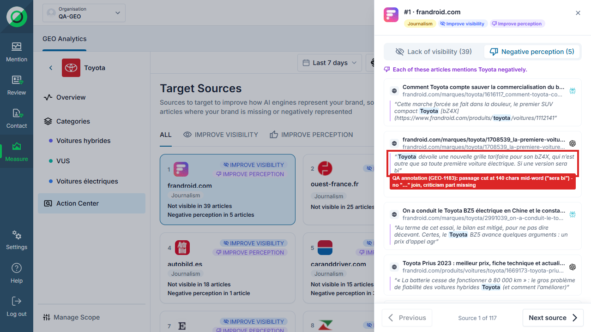
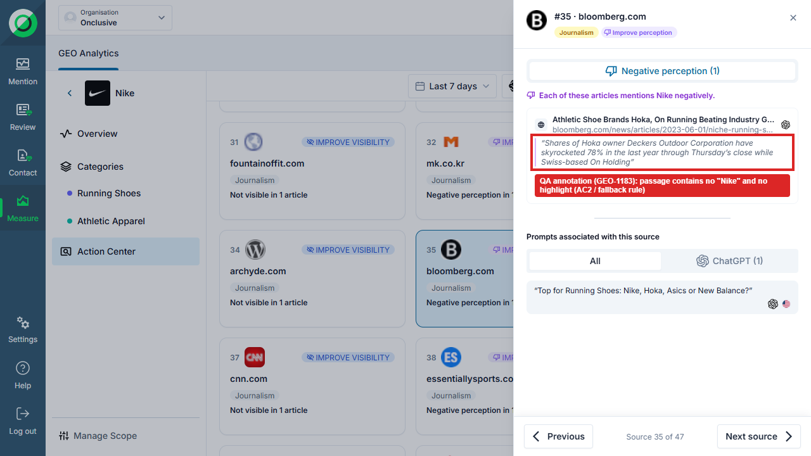
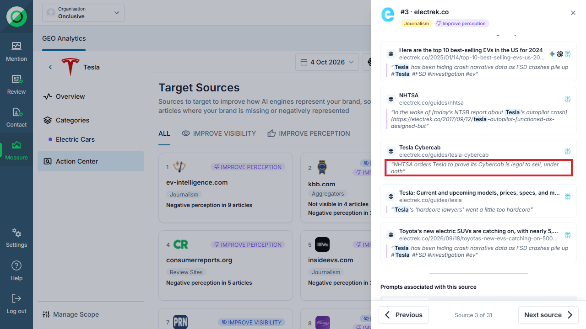
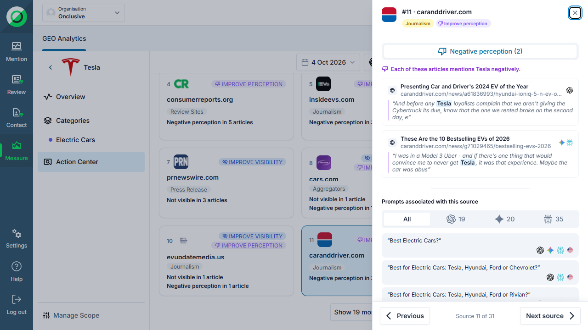

| Criterion | Result | Evidence |
|---|---|---|
| AC1 — caranddriver.com (Tesla): passage contains "Tesla" or "Cybertruck", name highlighted | PASS | Article "Presenting Car and Driver's 2024 EV of the Year": "…And before any Tesla loyalists complain that we aren't giving the Cybertruck its due," — "Tesla" highlighted. The passage text changed again since 05/10. |
| AC2 — no passage without the brand or product name | PASS | 06/10: 234/234 passages contain the brand. 05/10: 1 failure on Nike / bloomberg.com — that Nike report has since been deleted (404), so it cannot be re-tested. |
| Requirement — matched name exactly as written in the passage | FAIL | 1/234: Tesla / electrek.co, matched "Tesla Cybercab" vs passage "Tesla to prove its Cybercab" → no highlight (see GEO-1182). |
| AC3 — passage at most 140 characters | PASS | 0 over 140 on 234 passages. |
| AC3 — text that does not fit is shortened with "…" joins | FAIL | 102 passages stop at the 140-character limit with no "…" (Toyota 45, Tesla 26, Nike 18, Lidl NL 13), often mid-word. 7 passages contain an ellipsis; most look like page text (to confirm). |
| AC4 — verdicts unchanged after re-judge | NOT VERIFIABLE | No baseline from before the re-judge. |




| Check | Result | Detail |
|---|---|---|
| AC2 — brand or product name in the passage | PASS | 110/110 contain "Toyota" |
| Requirement — matched name written as in the passage (highlight) | PASS | 110/110 |
| AC3 — at most 140 characters | PASS | 0 over 140 · 46 at 138–140 |
| AC3 — shortened text joined with "…" | FAIL | 45 passages stop at the limit without "…" · 2 contain an ellipsis (see below) |
| # | Source | Article | Matched name | Len | Passage (as returned) |
|---|---|---|---|---|---|
| 1 | frandroid.com | Comment Toyota compte sauver la commercialisation du bZ4X, son ... | Toyota | 140 | “Cette marche forcée se fait dans la douleur, le premier SUV compact Toyota [bZ4X](https://www.frandroid.com/produits/toyota/voitures/1112141” |
| 1 | frandroid.com | (no title — URL shown) | Toyota | 140 | “Toyota dévoile une nouvelle grille tarifaire pour son bZ4X, qui n’est autre que sa toute première voiture électrique. Si une version sera bi” |
| 1 | frandroid.com | On a conduit le Toyota BZ5 électrique en Chine et le constat est ... | Toyota | 140 | “Au terme de cet essai, le bilan est mitigé, pour ne pas dire décevant. Certes, le Toyota BZ5 avance quelques arguments : un prix d’appel agr” |
| 3 | guideautoweb.com | Toyota bZ4X 2023 - Le Guide de l'auto | Toyota bZ4X | 139 | “Toyota bZ4X 2023 | Essais, actualité, galeries photos et vidéos - Le Guide de l’Auto [Magasinez votre **Toyota bZ4X 2023** sur Otogo.ca !\\” |
| 3 | guideautoweb.com | Toyota bZ4X 2023 : décevant et frustrant | Toyota bZ4X | 140 | “Toyota bZ4X 2023 : décevant et frustrant - Le Guide de l’Auto Toyota, le roi des véhicules hybrides, a mis bien du temps à lancer sur le mar” |
| 3 | guideautoweb.com | Toyota bZ4X 2024 - Essais, actualité, galeries photos et ... | Toyota bZ4X | 139 | “Toyota bZ4X 2024 | Essais, actualité, galeries photos et vidéos - Le Guide de l’Auto [Magasinez votre **Toyota bZ4X 2024** sur Otogo.ca !\\” |
| 3 | guideautoweb.com | Toyota bZ4X 2025 - Essais, actualité, galeries photos et ... | Toyota bZ4X | 139 | “Toyota bZ4X 2025 | Essais, actualité, galeries photos et vidéos - Le Guide de l’Auto [Magasinez votre **Toyota bZ4X 2025** sur Otogo.ca !\\” |
| 5 | caranddriver.com | 2023 Toyota 4Runner Review, Pricing, and Specs | Toyota 4Runner | 139 | “2023 Toyota 4Runner Review, Pricing, and Specs [Skip to Content](https://www.caranddriver.com/toyota/4runner-2023#main-content) - [SHOP NEW” |
| 5 | caranddriver.com | The 25 Bestselling Cars, Trucks, and SUVs of 2026 | Toyota | 139 | “Toyota sure flubbed the change-over to the new Rav4. Even when production increases, a lot of people might balk at the prices - $45-50K for” |
| 9 | kbb.com | 2026 Toyota Corolla Hybrid Consumer Reviews | toyota | 140 | “however, after 3 years of this piece of garbage that toyota calls a corolla, and 74,000 miles later i want to rip it apart. to start with, t” |
| 9 | kbb.com | 2026 Toyota Grand Highlander Consumer Reviews - Kelley Blue Book | Toyota Grand Highlander | 139 | “2026 Toyota Grand Highlander Consumer Reviews | Kelley Blue Book [Home](https://www.kbb.com/) [Toyota](https://www.kbb.com/toyota/) [Toyota” |
| 13 | automobile-propre.com | Les constructeurs japonais ont-ils déjà perdu la bataille de la voiture électrique ? | Toyota | 140 | “Côté efficience, autonomie et vitesse de recharge, si la Nissan Ariya s’en sort pas trop mal, cela s’avère assez décevant pour le Toyota bZ4” |
| 15 | edmunds.com | 20 Car Reviews | Toyota Corolla Cross | 139 | “Used 2024 Toyota Corolla Cross SUV Consumer Reviews - 21 Car Reviews | Edmunds Your Privacy By accessing this website, you acknowledge that” |
| 15 | edmunds.com | 2023 Toyota bZ4X Prices, Reviews, and Pictures | Edmunds | Toyota | 140 | “It took Toyota a long time to produce a mass-market electric vehicle. One might hope the 2023 bZ4X was worth the wait. Not so much. The bZ4X” |
| 15 | edmunds.com | 2023 Toyota Camry Hybrid Review | Toyota | 139 | “Toyota Motor Engineering & Manufacturing (Toyota) is recalling certain 2023-2024 Camry and Camry Hybrid vehicles. The second-row center and” |
| 15 | edmunds.com | 2023 Toyota Highlander Review | Toyota Highlander | 140 | “One of the standard bearers of the midsize SUV class, the 2023 Toyota Highlander boasts a comfortable and quiet ride, plentiful features and” |
| 15 | edmunds.com | 2024 Toyota bZ4X | Toyota | 140 | “It took Toyota a long time to produce a mass-market electric vehicle. One might hope the 2024 bZ4X was worth the wait. Not so much. The bZ4X” |
| 15 | edmunds.com | 2025 Toyota bZ4X Prices, Reviews, and Pictures | Toyota bZ4X | 140 | “The Toyota bZ4X gets a much-needed drop in price for 2025, though it's still not enough to lift this EV to the top of the class. We like the” |
| 16 | caradisiac.com | (no title — URL shown) | Toyota | 140 | “Alors pour commencer, je roule sur Toyota depuis 15 ans et je n'ai jamais eu de problèmes jusqu'à que j'achète une Toyota Proace verso ce qu” |
| 16 | caradisiac.com | Un essai vérité et une expérience mitigée : Abel et Audrey nous parlent de leur Toyota Yaris Cross 130 hybride GR Sport | Toyota | 139 | “Vision lucide des produits Toyota ... qui surfe sur sa réputation de fiabilité (et encore vu l'hécatombe des fuites de courant sur certains” |
| 17 | yahoo.com | Toyota Prius : fin de commercialisation en France après 25 ans | Toyota Prius | 140 | “En 1997, la Toyota Prius faisait une entrée remarquée au Japon, souvent considérée comme une curiosité technologique. Vingt-cinq ans plus ta” |
| 19 | trustpilot.com | Avis de Toyota | Lisez les avis marchands de toyota.fr | Toyota | 139 | “Nous avons acheté un Toyota Hilux neuf en mars 2022 aujourd’hui il a 149 500km au compteur et nous rencontrons des problèmes d’injecteur et” |
| 19 | trustpilot.com | Avis de Toyota | Lisez les avis marchands de toyota.fr | Toyota | 139 | “Nous avons acheté un Toyota Hilux neuf en mars 2022 aujourd’hui il a 149 500km au compteur et nous rencontrons des problèmes d’injecteur et” |
| 19 | trustpilot.com | Lisez les avis marchands de toyota.fr | 4 sur 18 | Toyota | 139 | “Nous avons acheté un Toyota Hilux neuf en mars 2022 aujourd’hui il a 149 500km au compteur et nous rencontrons des problèmes d’injecteur et” |
| 19 | trustpilot.com | Lisez les avis marchands de toyota.fr | 6 sur 18 | Toyota | 139 | “Nous avons acheté un Toyota Hilux neuf en mars 2022 aujourd’hui il a 149 500km au compteur et nous rencontrons des problèmes d’injecteur et” |
| 19 | trustpilot.com | Lisez les avis marchands de toyota.fr | 7 sur 18 | Toyota | 139 | “Nous avons acheté un Toyota Hilux neuf en mars 2022 aujourd’hui il a 149 500km au compteur et nous rencontrons des problèmes d’injecteur et” |
| 20 | fiches-auto.fr | (no title — URL shown) | Toyota | 140 | “Réponse Toyota France pour pb peinture, pas de prise en garantie car seul le pare-choc av présente des tâches jaunes dues à un élément exter” |
| 33 | consumerreports.org | 2023 Toyota Camry Hybrid Reliability - Consumer Reports | Toyota Camry Hybrid | 140 | “The 2023 Toyota Camry Hybrid has been recalled 2 times by NHTSA. [View Recalls](https://www.consumerreports.org/cars/toyota/camry-hybrid/202” |
| 33 | consumerreports.org | Consumer Reports' 26 Most Reliable SUVs for 2026 - Consumer Reports | Toyota RAV4 | 140 | “5 Reasons Not to Buy a Toyota RAV4 Now\n![2025 Toyota RAV4 driving in city](https://article.images.consumerreports.org/image/upload/w_448,h_” |
| 34 | greencars.com | La postura de Toyota sobre los vehículos eléctricos: ¿héroe o villano? | Toyota | 140 | “Toyota ocupa el último lugar en el [informe mundial sobre vehículos ecológicos](https://thedriven.io/2022/09/09/toyota-ranks-last-in-global-” |
| 35 | highmotor.com | Toyota is the car company with the best reputation in Spain | Toyota | 140 | “I have a 2013 Avanza pickup truck. I had a head-on collision and the airbags never opened. I no longer feel safe. I bought a Toyota for safe” |
| 36 | rpmweb.ca | Voici les marques et modèles qui conservent le mieux leur ... | Toyota Tacoma | 140 | “Certaines versions du Toyota Tacoma 2024 et 2025 sont visées par un rappel important en Amérique du Nord. - 5 149 exemplaires sont touchés a” |
| 43 | expansion.com | La estrategia de Toyota para dar el salto al coche eléctrico | Toyota | 140 | “El Toyota bZ4X Previsto es el primer modelo 100% eléctrico de la marca EXPANSION Después del fallido lanzamiento de su primer coche eléctric” |
| 45 | xataka.com | Una semana con el Toyota C-HR+: frente a la revolución del coche eléctrico chino, la evolución más japonesa posible | Toyota | 139 | “El Toyota bZ4X ha sido un problema para la compañía desde su entrada en la línea de montaje. Las primeras pruebas demostraron que estábamos” |
| 54 | cargurus.com | The Best Electric Car Companies | Toyota | 140 | “The electric Toyota bZ4x--which shares all of its drivetrain with the Subaru Solterra–-had a disastrous launch which resulted in a stop-sale” |
| 54 | cargurus.com | The Best Electric Car Companies - CarGurus | Toyota | 140 | “The electric Toyota bZ4x--which shares all of its drivetrain with the Subaru Solterra–-had a disastrous launch which resulted in a stop-sale” |
| 55 | motorbiscuit.com | Toyota Stands Strong in Sustainability Perceptions Thanks to the Prius | Toyota | 140 | “Another potential ding to Toyota’s sustainability reputation is the $180 million paid to the U.S. government in 2021. This payment was for f” |
| 56 | motortrend.com | 3-Row SUV Comparison Test: Kia Telluride vs. Toyota ... | Toyota | 140 | “The Toyota brings a strong value game and sharp interior design. However, the Highlander's claustrophobic third row, outdated infotainment s” |
| 56 | motortrend.com | Ford Expedition vs. Chevrolet Tahoe vs. Dodge Durango vs. Toyota ... | Toyota Sequoia | 140 | “Last place goes to the Toyota Sequoia. We all liked how roomy its cabin was, but that's about it. Everything about the Toyota feels old, fro” |
| 72 | topspeed.com | The Honda Hybrid SUV That Outsold The Prius Twins | Toyota | 140 | “But alas, the comeback story wasn't meant to be. [Toyota moved just 13 Prius models](https://www.motor1.com/news/725449/toyota-prius-13-sale” |
| 89 | youtube.com | 10 Marques De Voitures Plus Performantes Et Plus Sûres Que Toyota | Toyota | 140 | “Tu penses que Toyota est la seule marque qui assure en matière de sécurité et de valeur ? Détrompe-toi. Crois-le ou non, plusieurs marques m” |
| 90 | aramisauto.com | Tous les avis sur la Toyota Yaris | Toyota | 140 | “Quand tu as un problème avec le véhicule neufs sa ne les regarde pas ses Toyota en sachant que je il a un peu plus de 1 mois. En plus le cof” |
| 92 | auto123.com | Rappel de 17 000 Toyota Tundra et de VUS Lexus | Actualités automobile | Auto123 | Toyota | 140 | “La réputation de fiabilité à toute épreuve de Toyota traverse son test le plus difficile de mémoire récente. Ce qui a commencé comme un prob” |
| 98 | autohebdo.net | Toyota Venza - Prix, versions, données techniques, options, photos, avis, offres spéciales | AutoHebdo.net | Toyota | 139 | “Rappel n°:2022-179 Date:13 avril 2022 Système affecté:Freins Années du modèle:2021 2022 ⌃ **N° de rappel du fabricant:** SRC RD6 (Toyota) /” |
| 105 | index-assurance.fr | Top 100 des voitures neuves les plus vendues en France en 2025 – Index Assurance | Toyota | 140 | “Stellantis et Toyota mauvais élèves Avec respectivement -6,8 % et -10 %, les groupes automobiles Stellantis et Toyota enregistrent les chute” |
| # | Source | Article | Matched name | Len | Passage (as returned) |
|---|---|---|---|---|---|
| 16 | caradisiac.com | Un essai vérité et une expérience mitigée : Abel et Audrey nous parlent de leur Toyota Yaris Cross 130 hybride GR Sport | Toyota | 139 | “Vision lucide des produits Toyota ... qui surfe sur sa réputation de fiabilité (et encore vu l'hécatombe des fuites de courant sur certains” |
| 42 | electrek.co | Electric vehicles hit a milestone as 18 models join 5K sales club | Toyota | 108 | “Toyota when it comes to electric seems to be the worst managed, worst engineered of the bunch. Cheaper el...” |
| # | Source | Article | Matched name | Len | Passage (as returned) |
|---|---|---|---|---|---|
| 1 | frandroid.com | Comment Toyota compte sauver la commercialisation du bZ4X, son ... | Toyota | 140 | “Cette marche forcée se fait dans la douleur, le premier SUV compact Toyota [bZ4X](https://www.frandroid.com/produits/toyota/voitures/1112141” |
| 3 | guideautoweb.com | Toyota bZ4X 2023 - Le Guide de l'auto | Toyota bZ4X | 139 | “Toyota bZ4X 2023 | Essais, actualité, galeries photos et vidéos - Le Guide de l’Auto [Magasinez votre **Toyota bZ4X 2023** sur Otogo.ca !\\” |
| 3 | guideautoweb.com | Toyota bZ4X 2024 - Essais, actualité, galeries photos et ... | Toyota bZ4X | 139 | “Toyota bZ4X 2024 | Essais, actualité, galeries photos et vidéos - Le Guide de l’Auto [Magasinez votre **Toyota bZ4X 2024** sur Otogo.ca !\\” |
| 3 | guideautoweb.com | Toyota bZ4X 2025 - Essais, actualité, galeries photos et ... | Toyota bZ4X | 139 | “Toyota bZ4X 2025 | Essais, actualité, galeries photos et vidéos - Le Guide de l’Auto [Magasinez votre **Toyota bZ4X 2025** sur Otogo.ca !\\” |
| 4 | autobild.es | Prueba de autonomía real: ¿cuántos kilómetros hacen 50 coches ... | Toyota bZ4X | 137 | “| 226 | | Mercedes EQA 250 | 190 | 66,5 | 4 °C | 53.795 | 222 | | Toyota bZ4X | 218 | 71,5 | 4ºC | 750/mes | 217 | | VW ID.3 Pro 150 kW |” |
| 5 | caranddriver.com | 2023 Toyota 4Runner Review, Pricing, and Specs | Toyota 4Runner | 139 | “2023 Toyota 4Runner Review, Pricing, and Specs [Skip to Content](https://www.caranddriver.com/toyota/4runner-2023#main-content) - [SHOP NEW” |
| 9 | kbb.com | 2026 Toyota Grand Highlander Consumer Reviews - Kelley Blue Book | Toyota Grand Highlander | 139 | “2026 Toyota Grand Highlander Consumer Reviews | Kelley Blue Book [Home](https://www.kbb.com/) [Toyota](https://www.kbb.com/toyota/) [Toyota” |
| 15 | edmunds.com | 20 Car Reviews | Toyota Corolla Cross | 139 | “Used 2024 Toyota Corolla Cross SUV Consumer Reviews - 21 Car Reviews | Edmunds Your Privacy By accessing this website, you acknowledge that” |
| 15 | edmunds.com | Toyota bZ4X Stumbles in EV Comparison | Edmunds | Toyota bZ4X | 136 | “Toyota bZ4X Stumbles in EV Comparison | Edmunds Your Privacy By accessing this website, you acknowledge that Edmunds and its third party” |
| 16 | caradisiac.com | 77 avis sur Toyota Yaris Cross - Donnez votre avis | Toyota Yaris Cross | 58 | “77 avis sur Toyota Yaris Cross - Donnez votre avis [![Logo” |
| 19 | trustpilot.com | Opiniones sobre Toyota España | Toyota | 102 | “Opiniones sobre Toyota España | Lee las opiniones sobre el servicio de toyota.es [![Logotipo de Toyota” |
| 19 | trustpilot.com | Toyota España Opiniones 182 | Toyota | 112 | “Opiniones sobre Toyota España | Lee las opiniones sobre el servicio de toyota.es | 8 de 12 [![Logotipo de Toyota” |
| 20 | fiches-auto.fr | Fiabilité toyota vos témoignages - Fiches-auto | Toyota | 70 | “Fiabilité Toyota **4070** témoignages fiabilité pour la marque Toyota.” |
| 33 | consumerreports.org | 2023 Toyota Camry Hybrid Reliability - Consumer Reports | Toyota Camry Hybrid | 140 | “The 2023 Toyota Camry Hybrid has been recalled 2 times by NHTSA. [View Recalls](https://www.consumerreports.org/cars/toyota/camry-hybrid/202” |
| 33 | consumerreports.org | Consumer Reports' 26 Most Reliable SUVs for 2026 - Consumer Reports | Toyota RAV4 | 140 | “5 Reasons Not to Buy a Toyota RAV4 Now\n![2025 Toyota RAV4 driving in city](https://article.images.consumerreports.org/image/upload/w_448,h_” |
| 34 | greencars.com | La postura de Toyota sobre los vehículos eléctricos: ¿héroe o villano? | Toyota | 140 | “Toyota ocupa el último lugar en el [informe mundial sobre vehículos ecológicos](https://thedriven.io/2022/09/09/toyota-ranks-last-in-global-” |
| 36 | rpmweb.ca | VUS compacts 2023 - Meilleurs véhicules | RPM | Toyota RAV4 | 132 | “véhicules | RPM # Meilleurs VUS compacts 2023 selon RPM 3\. Toyota RAV4 2023 Le Toyota RAV4 est celui qui a été le plus encensé dans” |
| 56 | motortrend.com | www.motortrend.com › features › best-electric-suvThe Best Electric SUVs of 2024: Top Picks to Go EV - MotorTrend | Toyota bZ4X | 88 | “103-129 mpg-e ADVERTISEMENT - CONTINUE READING BELOW  - [Toyota](https://www.aramisauto.com/achat/toyota/offres/) - [Corolla” |
| 98 | autohebdo.net | Toyota Venza - Prix, versions, données techniques, options, photos, avis, offres spéciales | AutoHebdo.net | Toyota | 139 | “Rappel n°:2022-179 Date:13 avril 2022 Système affecté:Freins Années du modèle:2021 2022 ⌃ **N° de rappel du fabricant:** SRC RD6 (Toyota) /” |
| # | Source | Article | Matched name | Len | Passage (as returned) | Occ. |
|---|---|---|---|---|---|---|
| 3 | guideautoweb.com | Toyota Highlander 2023 - Essais, actualité, galeries photos ... | Toyota Highlander | 78 | “D’autres Toyota Highlander aux prises avec des sièges mal fabriqués\n\nRappels” | ×2 |
| 9 | kbb.com | 2025 Toyota Corolla Hybrid Consumer Reviews | toyota | 123 | “however, after 3 years of this piece of garbage that toyota calls a corolla, and 74,000 miles later i want to rip it apart.” | ×2 |
| 14 | hibridosyelectricos.com | Toyota lanza en España su primer coche eléctrico, el bZ4x, desde 48.650 euros | Toyota bZ4x | 84 | “Fracaso del Toyota bZ4x: El primer eléctrico de Toyota sigue sin llegar a las calles” | ×2 |
| 19 | trustpilot.com | Avis de Toyota | Lisez les avis marchands de toyota.fr | Toyota | 139 | “Nous avons acheté un Toyota Hilux neuf en mars 2022 aujourd’hui il a 149 500km au compteur et nous rencontrons des problèmes d’injecteur et” | ×2 |
| 19 | trustpilot.com | Lisez les avis marchands de toyota.fr | 4 sur 18 | Toyota | 139 | “Nous avons acheté un Toyota Hilux neuf en mars 2022 aujourd’hui il a 149 500km au compteur et nous rencontrons des problèmes d’injecteur et” | ×3 |
| 19 | trustpilot.com | Lisez les avis marchands de toyota.fr | 6 sur 18 | Toyota | 139 | “Nous avons acheté un Toyota Hilux neuf en mars 2022 aujourd’hui il a 149 500km au compteur et nous rencontrons des problèmes d’injecteur et” | ×4 |
| 19 | trustpilot.com | Lisez les avis marchands de toyota.fr | 7 sur 18 | Toyota | 139 | “Nous avons acheté un Toyota Hilux neuf en mars 2022 aujourd’hui il a 149 500km au compteur et nous rencontrons des problèmes d’injecteur et” | ×5 |
| 54 | cargurus.com | The Best Electric Car Companies - CarGurus | Toyota | 140 | “The electric Toyota bZ4x--which shares all of its drivetrain with the Subaru Solterra–-had a disastrous launch which resulted in a stop-sale” | ×2 |
| Check | Result | Detail |
|---|---|---|
| AC2 — brand or product name in the passage | PASS | 54/54 contain "Tesla" |
| Requirement — matched name written as in the passage (highlight) | FAIL | 53/54 |
| AC3 — at most 140 characters | PASS | 0 over 140 · 27 at 138–140 |
| AC3 — shortened text joined with "…" | FAIL | 26 passages stop at the limit without "…" · 0 contain an ellipsis (see below) |
| # | Source | Article | Matched name | Len | Passage (as returned) |
|---|---|---|---|---|---|
| 3 | electrek.co | Tesla Cybercab | Tesla Cybercab | 69 | “NHTSA orders Tesla to prove its Cybercab is legal to sell, under oath” |
| # | Source | Article | Matched name | Len | Passage (as returned) |
|---|---|---|---|---|---|
| 1 | ev-intelligence.com | Charging The Future: Market Insights & Analysis - Electric Vehicle Intelligence Report | Tesla | 140 | “Tesla’s brand reputation has suffered. This applies not only to purchase intent but also to the perception that the brand is safe, family-fr” |
| 1 | ev-intelligence.com | EVIR REPORT WAVE 4 JULY DRAFT | Tesla | 140 | “Tesla’s brand reputation slide continues. The industry leader remains in deep trouble with consumers, as evidenced by its lowest net positiv” |
| 1 | ev-intelligence.com | Self-Driving Cars and Electric Vehicles: U.S. Market ... | Tesla | 139 | “Tesla ranks lowest on both positivity and trust with these consumers—and is the only brand tested with underwater brand view (-9) and trust” |
| 1 | ev-intelligence.com | Self-Driving Cars and Electric Vehicles: U.S. Market Insights & Analysis - Electric Vehicle Intelligence Report | Tesla | 140 | “Tesla’s extended slide. Despite Elon Musk’s step away from politics, Tesla’s brand reputation continues to decline on key metrics with no si” |
| 1 | ev-intelligence.com | Self-Driving Cars and Electric Vehicles: U.S. Market Insights & Analysis, August - Electric Vehicle Intelligence Report | Tesla | 140 | “Negative perceptions of Tesla’s brand have worsened. Declining brand positivity and trust scores have hit new lows for Tesla—down significan” |
| 1 | ev-intelligence.com | Self-Driving Cars and Electric Vehicles: U.S. Market Insights & Analysis, July - Electric Vehicle Intelligence Report | Tesla | 140 | “Tesla’s brand reputation slide continues. The industry leader remains in deep trouble with consumers, as evidenced by its lowest net positiv” |
| 1 | ev-intelligence.com | Self-Driving Cars and Electric Vehicles: U.S. Market Insights & Analysis, October - Electric Vehicle Intelligence Report | Tesla | 140 | “Consumer perceptions of the Tesla Cybertruck are starkly negative. Nearly four in five describe the Tesla Cybertruck as “ugly” or “hideous”,” |
| 1 | ev-intelligence.com | Sparksheet: The Top Findings From Our April Report - Electric Vehicle Intelligence Report | Tesla | 140 | “Tesla is the only EV brand with net negative consumer perception—and it’s getting worse. Despite leading in sales, Tesla now holds a net fav” |
| 2 | kbb.com | Tesla Cars, Trucks, and SUVs - Kelley Blue Book | Tesla | 140 | “Tesla Recalls Vehicles Over Rearview Camera Issue Tesla is recalling 218,868 vehicles due to a software defect that can prevent the rearview” |
| 2 | kbb.com | Tesla Electric Vehicles: All Tesla EVs Reviewed and Rated | Tesla | 139 | “Tesla Recalls Cybertrucks with Off-Road Light Bar Tesla recalled 6,197 Cybertrucks with the optional off-road light bar because the bar can” |
| 3 | electrek.co | NHTSA | Tesla | 140 | “In the wake of [today’s NTSB report about Tesla’s autopilot crash](https://electrek.co/2017/09/12/tesla-autopilot-functioned-as-designed-but” |
| 4 | consumerreports.org | 2021 Tesla Model S Road Test Report | tesla | 140 | “RECALL ALERT: There are 24 recalls on this vehicle. [Learn More.](https://www.consumerreports.org/cars/tesla/model-s/2021/reliability/#recal” |
| 4 | consumerreports.org | How the Tesla Model S Changed the World | Tesla | 140 | ““But as others followed with excellent EV offerings, Tesla took a hard turn and began to try to differentiate itself with futuristic technol” |
| 5 | caranddriver.com | These Are the 10 Bestselling EVs of 2026 | Tesla | 140 | “I was in a Model 3 Uber - and if there's one thing that would convince me to never get Tesla, it was that experience. Maybe the car was abus” |
| 6 | insideevs.com | The Best EVs To Buy In March 2026: Our Favorites In Every Category | Tesla | 140 | “Unfortunately, [Tesla did remove standard Autosteer](https://insideevs.com/news/785225/tesla-removes-autopilot-base-models/) from both model” |
| 7 | businessinsider.com | Tesla Models, Prices, Charging, Stock: Guide to the Electric ... | Tesla | 140 | “Tesla has won some praise for pushing electric and self-driving vehicles to new heights, but its cars have also been involved in hundreds of” |
| 9 | cars.com | 2025 Tesla Model 3 consumer reviews - Cars.com | Tesla Model 3 | 140 | “The Tesla Model 3 is quick and easy to charge, but everything else feels like a downgrade. The interior is cheap, the drive is sloppy, the e” |
| 10 | carbuzz.com | Our Top-Rated EV Of 2025 Is Also One Of The Cheapest | Tesla | 140 | “We were shocked to hear the news about Tesla [discontinuing the two models](https://carbuzz.com/tesla-model-s-model-x-production-ending/) th” |
| 16 | motortrend.com | Tested! Rivian R2 vs. Our Favorite EV SUVs: Model Y, Ioniq 5, Mach-E | Tesla Model Y | 140 | “Opinions on the Tesla Model Y’s ride quality skewed negative, though we all praised the quiet cabin. We have burned many office hours arguin” |
| 17 | usatoday.com | How Elon Musk's Tesla has redefined the American road | Tesla | 140 | “In August 2025, a Miami federal jury ordered Tesla to pay over $240 million — including $200 million in punitive damages — in a landmark ver” |
| 23 | bloomberg.com | What Tesla Owners Think of the Model 3, Elon Musk | Tesla | 140 | “I love the vehicles but do not want to support someone who has such vitriol and low opinion of the very people who have made Tesla a success” |
| 24 | consumeraffairs.com | Tesla Reviews from Real Customers - Consumer Affairs | Tesla | 140 | “Terrible customer service in Canada. Tesla does not have any head office in Canada. They are saving money for not answering customer questio” |
| 25 | bgr.com | 9 Common Problems The Tesla Model Y Has Had Since Its Release - BGR | Tesla Model Y | 139 | “The Tesla Model Y is one of the most popular electric SUVs on the market. [This car, like most of Tesla's products, is a very satisfying EV” |
| 30 | autoweek.com | Hyundai Overtakes Ford as Hybrid Boom Reshapes US ... | Tesla | 140 | “Tesla will have the greatest drop in sales for the third quarter, to 123,880 sold, down 31 percent. Market share is 3 percent, down 0.6 poin” |
| 33 | dcmediagroup.us | Citizens Persist at Tesla Takedowns; Pace For Long Race Hard Road - DCMediaGroup | Tesla | 139 | “The anti-Tesla movement is one of the most successful cases of social coordination in American history. In the span of six months the Tesla” |
| 35 | heatmap.news | Heatmap Poll: Elon Musk Is Alienating Tesla Buyers - Heatmap News | Tesla | 140 | “Elon Musk Is Alienating Future Tesla Buyers, Heatmap Poll Finds A small plurality of prospective EV buyers say Elon Musk has made them unlik” |
| # | Source | Article | Matched name | Len | Passage (as returned) |
|---|---|---|---|---|---|
| 3 | electrek.co | NHTSA | Tesla | 140 | “In the wake of [today’s NTSB report about Tesla’s autopilot crash](https://electrek.co/2017/09/12/tesla-autopilot-functioned-as-designed-but” |
| 4 | consumerreports.org | 2021 Tesla Model S Road Test Report | tesla | 140 | “RECALL ALERT: There are 24 recalls on this vehicle. [Learn More.](https://www.consumerreports.org/cars/tesla/model-s/2021/reliability/#recal” |
| 5 | caranddriver.com | (no title — URL shown) | Tesla Model X | 137 | “2023 Tesla Model X Review, Pricing, and Specs [Skip to Content](https://www.caranddriver.com/tesla/model-x-2023#main-content) - [SHOP NEW” |
| 6 | insideevs.com | The Best EVs To Buy In March 2026: Our Favorites In Every Category | Tesla | 140 | “Unfortunately, [Tesla did remove standard Autosteer](https://insideevs.com/news/785225/tesla-removes-autopilot-base-models/) from both model” |
| 10 | carbuzz.com | Our Top-Rated EV Of 2025 Is Also One Of The Cheapest | Tesla | 140 | “We were shocked to hear the news about Tesla [discontinuing the two models](https://carbuzz.com/tesla-model-s-model-x-production-ending/) th” |
| 15 | reuters.com | Exclusive: Tesla's brand loyalty collapsed after Musk backed Trump, data shows | Tesla | 88 | “EXCLUSIVE: Tesla's brand loyalty collapsed after Musk backed Trump, data shows | Reuters” |
| # | Source | Article | Matched name | Len | Passage (as returned) | Occ. |
|---|---|---|---|---|---|---|
| 1 | ev-intelligence.com | Self-Driving Cars and Electric Vehicles: U.S. Market Insights & Analysis, July - Electric Vehicle Intelligence Report | Tesla | 140 | “Tesla’s brand reputation slide continues. The industry leader remains in deep trouble with consumers, as evidenced by its lowest net positiv” | ×2 |
| Check | Result | Detail |
|---|---|---|
| AC2 — brand or product name in the passage | PASS | 41/41 contain "Nike" |
| Requirement — matched name written as in the passage (highlight) | PASS | 41/41 |
| AC3 — at most 140 characters | PASS | 0 over 140 · 19 at 138–140 |
| AC3 — shortened text joined with "…" | FAIL | 18 passages stop at the limit without "…" · 4 contain an ellipsis (see below) |
| # | Source | Article | Matched name | Len | Passage (as returned) |
|---|---|---|---|---|---|
| 1 | sgbonline.com | New Balance and Adidas Big Winners in Stifel’s 2025 BTS Athletic Footwear Survey | SGB Media Online | Nike | 140 | “The major laggard was Nike, which was impacted by the fading popularity of its Classics franchises, including the Dunk, Air Force 1 and Jord” |
| 5 | consumeraffairs.com | Nike Reviews from Real Customers | Nike | 140 | “I am beyond disappointed and angry with Nike. I placed an order on August 27th for shoes specifically for my autistic son to wear when he we” |
| 5 | consumeraffairs.com | Nike Reviews from Real Customers | Page 4 - Consumer Affairs | NIKE | 140 | “My grandson’s NIKE Kylie 4 basketball shoes, after 2 months of wear separated just under the NIKE Logo. I sent them to NIKE Canada in Toront” |
| 5 | consumeraffairs.com | Nike Reviews from Real Customers | Page 5 | NIKE | 140 | “I am very furious and vow to never purchased JORDANS OR ANY NIKE PRODUCT AGAIN. I WAS A VERY FAITHFUL CUSTOMER BUT NOT ANYMORE AND AS MUCH M” |
| 10 | trustpilot.com | Nike Reviews | Read Customer Service Reviews of www.nike.com | Nike | 140 | “My lightly worn black Nike polo shirt is loosing its Nike emblem after owning it for 6 months. These shirts are way too expensive for this t” |
| 10 | trustpilot.com | Read Customer Service Reviews of www.nike.com | 6 of 322 | Nike | 140 | “My lightly worn black Nike polo shirt is loosing its Nike emblem after owning it for 6 months. These shirts are way too expensive for this t” |
| 11 | kenresearch.com | United States Athletic Footwear Market Size & Forecast Report 2025-2031 | NIKE | 140 | “NIKE Direct revenue fell to USD 21.5 Bn globally in FY2024 with weaker digital trends in the quarter, underscoring that owned-channel econom” |
| 12 | trustedbuyerreport.com | Nike Review 2026: Are Nike Products Worth It? | Nike | 140 | “Nike holds a quality net score of 47.8 among US consumers in 2026, yet its value-for-money score sits at just 21.6 — a 26-point gap that rai” |
| 15 | athleticbrands.org | Athletic Brands: Your 2026 Performance Playbook | Nike | 139 | “Who's Dominating Athleisure Right Now And Why It Isn't Giants Like Nike And Lululemon - YouTube Tap to unmute CNBC4.17M subscribers _Video:” |
| 16 | believeintherun.com | (no title — URL shown) | Nike | 138 | “as its knockoffs), which were once reserved for race day shoes in Nike’s iron grip. Thanks to the rise of the super trainer (a designation” |
| 19 | rtings.com | www.rtings.com › running-shoes › reviewsNike Run Defy Review - RTINGS.com | Nike Run Defy | 140 | “The Nike Run Defy is a decent entry-level athletic shoe for walking, fitness classes, and occasional running. Its firm platform makes it fee” |
| 24 | makersrow.com | Beyond Yoga | Nike | 140 | “Nike’s scale means they can test athleisure sub-brands and drop collections at a pace no smaller brand can match. But their market dominance” |
| 29 | 247wallst.com | With Nike's Dividend Approaching 5%, Can Caitlin Clark Save The Company, Like Michael Jordan Did A Generation Ago? | Nike | 140 | “With Nike’s Dividend Approaching 5%, Can Caitlin Clark Save The Company, Like Michael Jordan Did A Generation Ago? - 24/7 Wall St. Nike's st” |
| 35 | morningstar.com | Nike's Renewed Focus on Its Competitive Advantages Should Bring Better Results After Current Strife | Nike | 140 | “We view Nike as the leader of the athletic apparel market and believe it will recover from recent problems, including lackluster product dev” |
| 36 | simplywall.st | NIKE (NYSE:NKE) - Stock Analysis | NIKE | 140 | “NIKE reported Q1 fiscal 2027 revenue of $11.2 billion, a 4% decline reported (5% currency-neutral), missing the analyst consensus estimate o” |
| 37 | storm.mg | NIKE 關鍵字 - 風傳媒 | NIKE | 139 | “NIKE 關鍵字 - 風傳媒 標題 返回確定 所有分類 新聞 新聞政治軍事調查國際兩岸國內全解析重磅專訪名人真心話公共政策醫療健康藝文歷史地方新聞風傳媒民調 [] [立院直播] 評論 評論風評專欄觀點投書風書房 財經 財經商業經濟科技AI證券投資下班經濟學理財期貨房地產詐騙防制” |
| 38 | zacks.com | Bear of the Day: Nike (NKE) - October 2, 2026 | Nike | 140 | “Bear of the Day: Nike (NKE) Read MoreHide Full Article ## Key Takeaways - NIKE's fiscal Q1 EPS beat estimates, while revenues fell 4.3% amid” |
| 42 | mordorintelligence.com | Athleisure Companies - Key Players & More | Nike | 140 | “Pressure showed up in Nike's FY2025 results, even with global scale still intact. Nike, a leading brand, can absorb tariff shocks better tha” |
| # | Source | Article | Matched name | Len | Passage (as returned) |
|---|---|---|---|---|---|
| 1 | sgbonline.com | EXEC: The Apparel Brands Bringing the Brand Heat in 2025 | Nike | 139 | “EXEC: Nike, Inc. Faces More Share Price Target Cuts and Another Downgrade] October 5, 2026 ... [EXEC: Nike to See More Cuts with New “Pace”” |
| 6 | yahoo.com | NIKE, Inc. (NKE) - Yahoo Finance | Nike | 111 | “Nike just reported a mixed fiscal Q1, with revenue down 4% to $11.2 billion and Greater China sales down 26%...” |
| 11 | kenresearch.com | USA Sports Apparel Market Market Share, Companies & Trends Report 2025-2031 | NIKE | 129 | “10% NIKE revenue decline (FY2025, Nike/global) illustrates that category scale does not protect against product-cycle weakness...” |
| 41 | bbc.com | Ni iki cyatumye Nike itakaza ubudahangarwa ku isoko mpuzamahanga y'imyambaro ya sport? | Nike | 121 | “Ni iki cyatumye Nike itakaza ubudahangarwa ku isoko mpuzamahanga y'imyambaro ya sport? ... Iyi ni imyaka igoye kuri Nike.” |
| # | Source | Article | Matched name | Len | Passage (as returned) |
|---|---|---|---|---|---|
| 1 | sgbonline.com | EXEC: Citi Survey Sees Nike Perceptions Slip, Adidas Gain | SGB Media Online | Nike | 70 | “Citi Survey Sees Nike Perceptions Slip, Adidas Gain | SGB Media Online” |
| 4 | sgieurope.com | (no title — URL shown) | Nike | 101 | “Athletic Footwear Market Grows 5% to $105B Despite Nike Decline in 2024 | Sporting Goods Intelligence” |
| 20 | dickssportinggoods.com | Performance Athletic Shoes | DICK'S Sporting Goods | Nike | 95 | “I purchased these to replace Nike track **shoes** that did n't last 3 meets before they ripped.” |
| 34 | koalagains.com | koalagains.com · stocks · NASDAQLululemon Athletica Inc. (LULU) Competitive Analysis | NIKE | 43 | “NIKE, Inc. | NKE | 40% | 40% | Underperform” |
| # | Source | Article | Matched name | Len | Passage (as returned) | Occ. |
|---|---|---|---|---|---|---|
| 10 | trustpilot.com | Read Customer Service Reviews of www.nike.com | 6 of 322 | Nike | 140 | “My lightly worn black Nike polo shirt is loosing its Nike emblem after owning it for 6 months. These shirts are way too expensive for this t” | ×2 |
| Check | Result | Detail |
|---|---|---|
| AC2 — brand or product name in the passage | PASS | 29/29 contain "Lidl" |
| Requirement — matched name written as in the passage (highlight) | PASS | 29/29 |
| AC3 — at most 140 characters | PASS | 0 over 140 · 13 at 138–140 |
| AC3 — shortened text joined with "…" | FAIL | 13 passages stop at the limit without "…" · 1 contain an ellipsis (see below) |
| # | Source | Article | Matched name | Len | Passage (as returned) |
|---|---|---|---|---|---|
| 4 | birminghammail.co.uk | I tried pasta bake sauces from M&S, Aldi, Tesco, Asda and Lidl - and I'll never buy Dolmio again - Emily Chaplin - Birmingham Live | Lidl | 140 | “Lidl's Baresa Tomato and Herb Pasta Bake bake was the joint cheapest at 75p per jar, but I was almost put off trying this one as soon as I o” |
| 4 | birminghammail.co.uk | I tried supermarket Coco Pops from Aldi, Lidl, Tesco, Co-op and M&S - and one tasted like cardboard - Birmingham Live | Lidl | 140 | “I don't like singling Lidl out, but every time I think they've set the bar at a new low, they somehow find a way of dropping it further. Lid” |
| 9 | lexology.com | (no title — URL shown) | Lidl | 140 | “In August 2022, the Swiss Federal Court ordered Lidl to destroy its own-branded chocolate bunnies, as they were found to be confusingly simi” |
| 11 | mondaq.com | (no title — URL shown) | Lidl | 139 | “The distiller and distributor William Grant & Sons was recently granted an interim interdict preventing the discount supermarket chain Lidl” |
| 12 | lexboost.com | ECLI:NL:RBAMS:2019:3868 - Rechtbank Amsterdam - Misleidende vergelijkende reclame Lidl voor dagcrème met ... | Lidl | 140 | “De rechtbank beoordeelt dat Lidl onvoldoende aannemelijk heeft gemaakt dat de ingrediënten en kwaliteit van haar crème vergelijkbaar zijn me” |
| 12 | lexboost.com | (no title — URL shown) | Lidl Nederland | 140 | “Hema vordert in kort geding dat Lidl Nederland en Delta-Sport worden verboden het Lidl letterkrat te verhandelen, stellende dat dit krat inb” |
| 16 | semantius.nl | Uitspraak ECLI:NL:GHARL:2023:8252 - Semantius | Lidl | 139 | “Het hof oordeelde dat Lidl en Delta-Sport zich schuldig hadden gemaakt aan slaafse nabootsing, omdat het Lidl letterkrat in wezen een kopie” |
| 18 | modernretail.co.uk | Retail copycat central - what can we learn? | Lidl | 140 | “The supermarket chain Lidl has been ordered to temporarily withdraw its “Hampstead” gin brand across Scotland, following a claim issued by t” |
| 20 | veelkantie.nl | Test: Lidl Kipsnacks » | Lidl | 140 | “Waarom Lidl kiest voor een erg ingewikkeld netwerk van ‘private labels’ ontgaat me eigenlijk volkomen. Wees gewoon eenduidigheid naar de kla” |
| 30 | grocerygazette.co.uk | Why M&S is protecting Percy: How copycats cash in and why brands are fighting back | Lidl | 140 | “Hendrick’s Gin maker William Grant & Sons took Lidl to court over the alleged [trademark infringement](https://www.gov.uk/government/organis” |
| 33 | eversheds-sutherland.com | Is imitation the highest form of flattery? Lookalike products and IP rights in the UK | Lidl | 140 | “Lidl was said to be “ riding on the coat tails” of Hendrick’s, taking unfair advantage of the repute of the Hendrick’s marks and harming the” |
| 55 | liverpoolecho.co.uk | I tried rich tea biscuits from Aldi, Lidl, M&S and more — winner £1 less than McVitie's | Lidl | 140 | “Lidl's was too bland(Image: Mia O'Hare) Lidl's biscuits appeared pale and had a pleasant texture. Unfortunately, the flavour proved deeply d” |
| 62 | standard.co.uk | Lidl stopped from selling own brand gin in copycat bottle row with Hendrick’s | The Standard | Lidl | 140 | “Lidl has been forced to temporarily stop selling a version of one of its own brand gins after being sued by the makers of Hendrick’s gin who” |
| # | Source | Article | Matched name | Len | Passage (as returned) |
|---|---|---|---|---|---|
| 26 | dohmenadvocaten.nl | Bij Lidl een namaak-Philips kopen?Niet meer … - Dohmen advocaten - Advocaten in intellectuele eigendom (IE/IP), techniek en ICT/IT, kunst en design | Lidl | 46 | “Bij Lidl een namaak-Philips kopen? Niet meer …” |
| # | Source | Article | Matched name | Len | Passage (as returned) |
|---|---|---|---|---|---|
| 14 | trustpilot.com | Lidl Nederland - Lidl.nl reviews | Bekijk consumentenreviews ... | Lidl Nederland | 106 | “Lidl Nederland - Lidl.nlReviews 2.692 • 1,5 [Supermarkt](https://nl.trustpilot.com/categories/supermarket)” |
| 30 | grocerygazette.co.uk | Why M&S is protecting Percy: How copycats cash in and why brands are fighting back | Lidl | 140 | “Hendrick’s Gin maker William Grant & Sons took Lidl to court over the alleged [trademark infringement](https://www.gov.uk/government/organis” |
| # | Source | Article | Matched name | Len | Passage (as returned) | Occ. |
|---|---|---|---|---|---|---|
| 17 | bbc.com | Lidl banned from selling copycat Birkenstock sandals, Dutch court rules | Lidl | 71 | “Lidl banned from selling copycat Birkenstock sandals, Dutch court rules” | ×2 |
| Key | Topic | Observation |
|---|---|---|
| GEO-1183 | This story | 05/10: QA verdict FAIL posted (AC2 Nike/bloomberg.com, AC3 "…" joins). Status QA In Progress. |
| GEO-1201 | Passage cut mid-word without "…" | Still present on 06/10 in all 4 analyses (102 passages). |
| GEO-1202 | Raw markdown / escape characters | Still present on 06/10 (33 passages), e.g. caranddriver.com "…[Skip to Content](https://www.caranddriver.com/tesla/model-x-2023#main-content) - [SHOP NEW". |
| GEO-1190 | Competitor matched as the brand | 05/10: 2 Toyota rows matched "Tesla" (elpais.com, automobile-propre.com). 06/10: no competitor-matched row in any of the 4 analyses. |
| GEO-1182 | Brand not highlighted | 1 case on 06/10 (Tesla / electrek.co, matched "Tesla Cybercab"). |
GET /geo/api/v1/reports/{id}/target-sources/{domain} for every source; for each source the number of passages equals the negative count on its card..claude/Data/processed/testcases/test-results/geo1183-passages-20261006.json